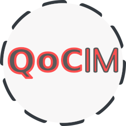
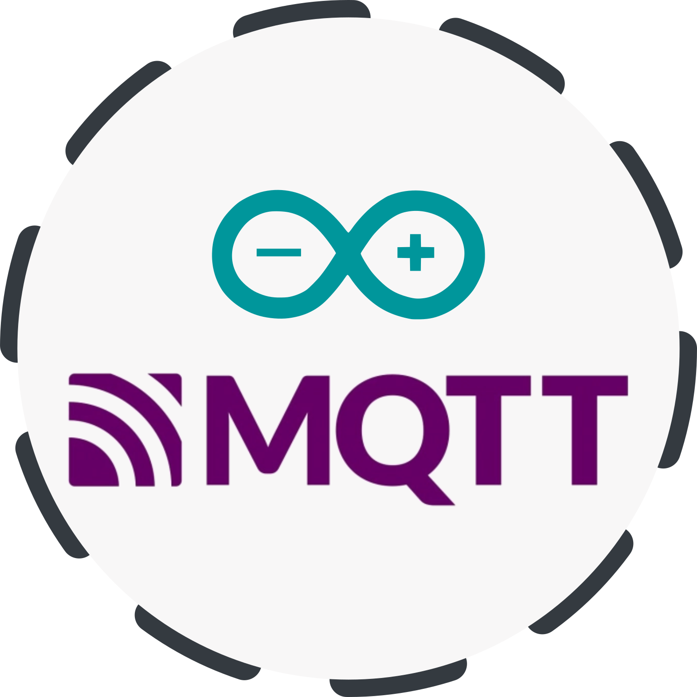
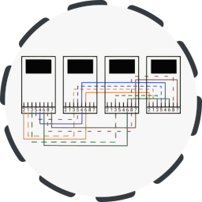
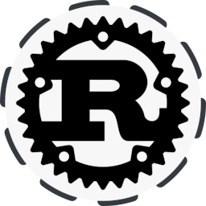
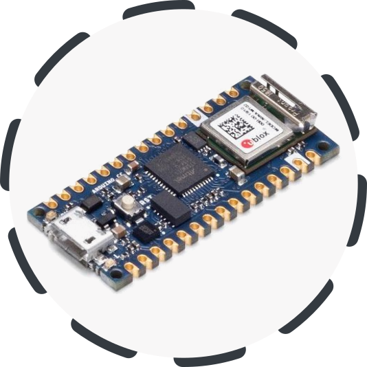
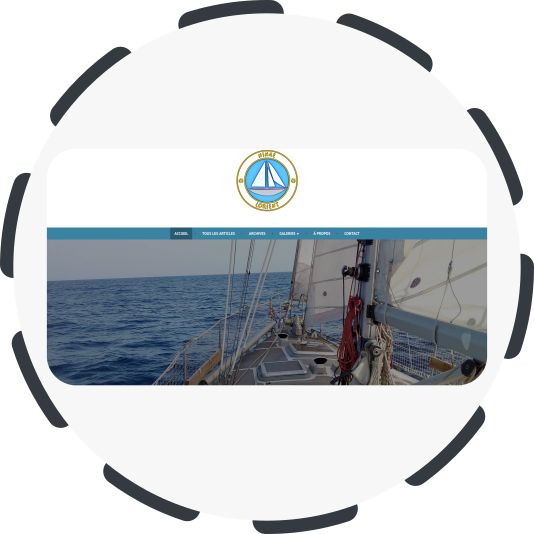

Légendes
QoCIM : un framework pour l'Internet des Objets

Projet de recherche QoCIM (Quality of Context Information Model). Un framework pour faciliter le développement
d’applications pour l’Internet des Objets. QoCIM s’intègre dans le projet ANR INCOME.
- Technologies : Java, Maven, Broker dédié
- Licence : LGPL
- https://github.com/pierrick-marie/QoCIM-Framework
git clone https://github.com/pierrick-marie/QoCIM-Framework.git
Portage du protocole MQTT-SN pour Arduino

Adaptation du protocol MQTT-SN
(MQTT for Sensor Networks) pour Arduino. La communication entre les modules est assurée par des modules XBee.
Le coordinateur (broker) est développé en Java.
- Technologies : Arduino, C/C++, Java
- Licence : BSD 3-Clause
- https://github.com/pierrick-marie/mqtt-sn-for-arduino
git clone https://github.com/pierrick-marie/mqtt-sn-for-arduino.git
Sondes réseaux (TAP)

Documentation et construction de sonde réseau TAP.
Un projet pédagogique de développement de solutions de surveillance et d'analyse de réseaux d'entreprises pour mieux les protéger contre
des cyber-attaques.
- Technologies : Ethernet, IP, GNU\Linux
- Licence : BSD 3-Clause
- https://framagit.org/network-probe/tap
git clone https://framagit.org/network-probe/tap.git
Galerie d'images en JavaScript
Une galerie d'image en JavaScript. Fonctionnalités : génération de la galerie à partir d'une liste d'image ; visualisation
en plein écran ; utilisation de raccourcis clavier.
- Technologies : HTML5, CSS3, JavaScript, JQuery
- Licence : BSD 3-Clause
- https://github.com/pierrick-marie/simple-js-gallery
git clone https://github.com/pierrick-marie/simple-js-gallery.git
Mini projets Rust : tetris, music player, serveur FTP

Découverte du langage Rust. Développement d'un jeu de Tétris, d'un player de fichiers audio ainsi qu'un client et un
serveur FTP. Développements basés sur le livre « Rust Programming by Example ».
- Technologies : Rust, SDL2, GTK3, Gstreamer
- Licence : BSD 3-Clause
- https://github.com/pierrick-marie/rust-lang-discovery
git clone https://github.com/pierrick-marie/rust-lang-discovery.git
Mini projet SpringBoot : API REST - en cours de développement

Découverte du framework SpringBoot avec le langage Kotlin ainsi que Vue.js et React. Développement d'une API REST, de tests unitaires et
d'intégration et mise en place d'un mécanisme de contrôle d'accès.
- Technologies : SpringBoot, Gradle, Kotlin, React
- Licence : BSD 3-Clause
- https://github.com/pierrick-marie/springboot-discovery
git clone https://github.com/pierrick-marie/springboot-discovery.git
Gyroscope Bluetooth Arduino

Un gyroscope sans fil avec de deux modules Arduino Nano 33
Iot et un écran LED. Un premier module Arduino mesure l'inclinaison et transmet en Bluetooth la mesure au second module qui affiche la valeur sur un écran LED.
- Technologies : Arduino Nano 33 IoT, Bluetooth
- Licence : BSD 3-Clause
- https://github.com/pierrick-marie/mqtt-sn-for-arduino
git clone https://github.com/pierrick-marie/mqtt-sn-for-arduino.git
Site web de voyage

Mon tour de l'Atlantique à la voile : https://www.ninae.fr
- Technologies : Wordpress
Thèse : Gestion de bout en bout de la Qualité de Contexte pour l'Internet des Objets
Manuscrit de thèse. Intitulé : Gestion de bout en bout de la Qualité de Context pour l'Internet des Objets - le quadriciel QoCIM.
- Technologies : QoCIM, Java, Maven, Raspberry Pi
- Licence : BSD 3-Clause
- https://pierrick-marie.github.io/manuscrit.pdf